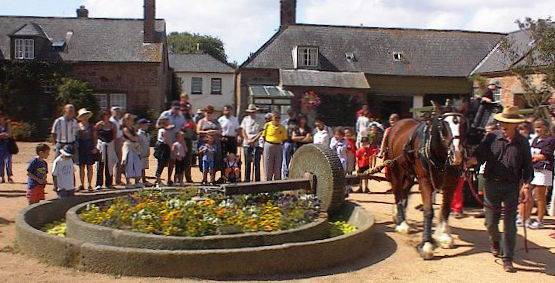

L'Assembliée d'Jèrriais

L'Assembliée d'Jèrriais
Rêunion au Mangnyi d'Samathès
La rêunion mensuelle eut lieu vendredi, l'25 d'août, au Mangnyi d'Samathès. Ch'tait eune bein belle séthée, et apréchant d'chent membres lus y trouvîtent pour vaie les bieaux gardîns.
Mme. Obbard fît la beinv'nue à tous et, viyant qu'la niet veint si vite, les gens marchîdrent à travers les gardîn parmi dé si bieaux bouaix. Ch'tait si bé et trantchille nou' y éthait resté bein pus longtemps si l'jour l'avait permîns. Un coup la touannée finie, Mme. Obbard învitit les membres à vaie eune partie du Mangnyi, et auprès à aller dans l'Crypte (la Chapelle), ou-est qu'y avait ieu des tchaises dé mînses pour les gens à lus assiéthe. Ichîn les rapports du mais d'juillet et la vîsite en Dgèrnésy fudrent lius et acceptés et eune nouvelle membre fut êlue. Moussieu Ph. Ahier, B. ès. S., fît un p'tit discours, en partie entouor lé mangnyi.

Le Président ermercyit Mme. Obbard (eune membre dé L'Assembliée) pour aver ieu la bonté d'nos laissi vaie des gardîns et pour aver prînt l'embarras dé mettre des siéges pour les membres, et en rêponnant, Mme. Obbard dit qué v'la tchi y avait fait grand pliaisi d'nos aver entrétîns, et qu'oulle espéthait d'nos r'vaie en tchique temps.
Lé President annoncit la rêunion annuelle générale dans la Salle d'Agritchultuthe, lé 29 dé septembre à 8 heuthes lé sé, et qué l'divèrtiss'ment s'sait arrangi par lé Sieur G. Perchard.
Viyiz étout: